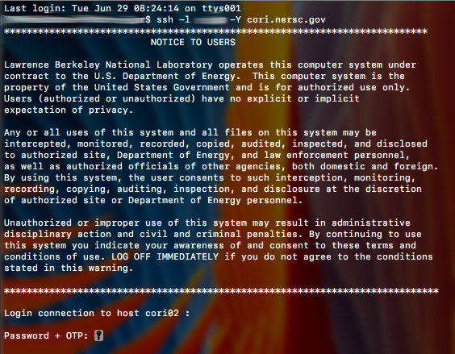
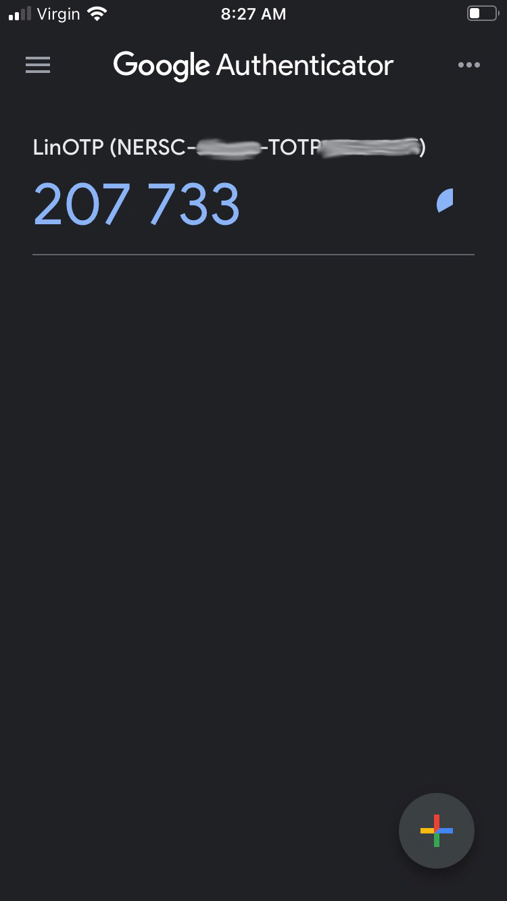
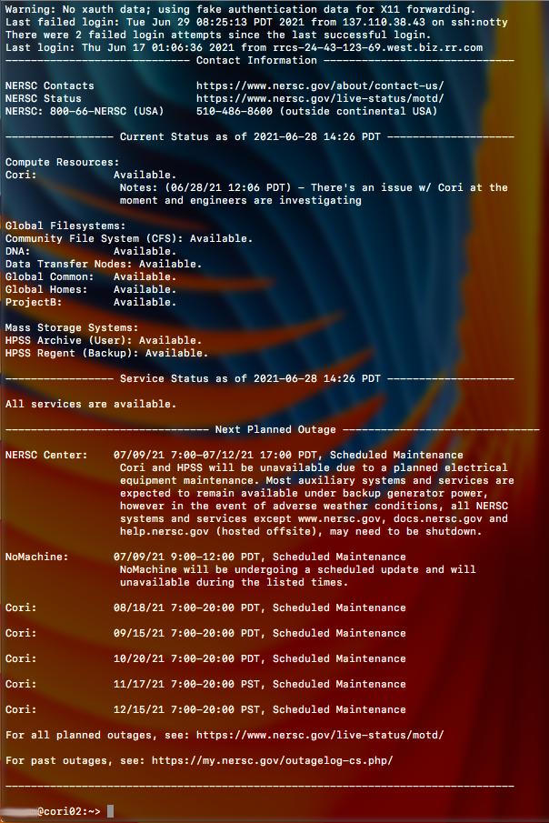
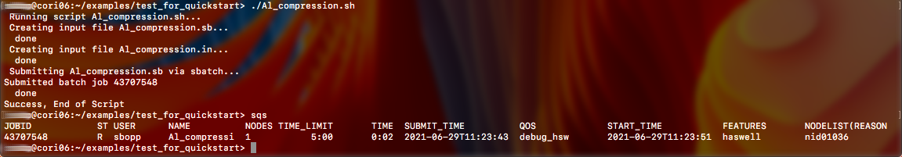

NERSC (the National Energy Research Scientific Computing Center) is a powerful cluster for use on DoE projects. All sorts of codes are carefully curated on their platform and support by thier staff is excellent. However, a strong background in shell commands and scripting is generally recommended for ease of use on NERSC as well as other systems accessable with SSH. Herein is a short guide for accessing NERSC and running example calculations. It is assumed that you have a NERSC account and the Google (or equivlent) authenticator application set up.
NERSC can be accessed via the terminal with the following command: $ ssh -l uname -Y cori.nersc.gov
uname in this case will need to be replaced with your unique username. Run the command (assuming that you are connected to the internet) and you should be greeted with something similar to the following:
Here you will need to enter your password followed without spaces by the unique, rotating 6-digit key that is supplied by your authenticator app, an example of which can be seen below:
Successfully entering your password plus the one time code will result in something to the effect of the following:
Successfully running the script will return a message something to the effect of the following:
Code is run on NERSC generally by queuing with SLURM. A sbatch file is used to compose the jobname, the CPU hours, and other relevant information to the calculation. My philosophy for the ease of computation and forking here is to have all scripts self-contained and used not only to run the calculation, but to generate the files whcih will be used during the calculation. A major benefit of this means of data handling is the ease of updating files on remote servers. For all of the code I supply on this page, scripts are self-contained and intended to be run with lammps. Any script needs to be in the executable mode and should generate and run all necessary files. Collating the necessary files is important to ensure that calculations will run, it is suggested that you peruse the files and understand how they work generally but sticking to the outline should make it easy to rapidly generate new scripts of your own without having to deal with the hassle of creating all new sbatch and other similar supporting files for every time that you with to run a calculation.
In the case that the reader is unfamiliar with BASH and navingating the shell, please refer to my incomplete, short book on the subject here in .pdf format.
To test that your calculations will run properly on NERSC, you may run the following code. The script is a standalone executable generated by for some calculations on TiN with a seperate datafile generated by Atomsk, MEAM and library files are included and the script will generate all of these in their appropriate formats and run the calculation before printing the jobname and its status on NERSC. Run the following code as $./TiN_lammps_with_datafiles.sh (if it is not running immediately, check that it is executable or run $chmod +x TiN_lammps_with_datafiles.sh) The code of this script is listed in the frame below with generous comments regarding what is happening at every step, also available here in .sh format.
If you are intending to run LAMMPS with a KIM potential, then the example code can be run as a standalone executable in order to check and see whether the KIM potentials library is working. Run the following code as $./Ar_KIM_lammps_v2 (if it is not running immediately, check that it is executable or run $chmod +x Ar_KIM_lammps_v2.sh) What follows is a step by step guide for running a LAMMPS calculation on NERSC with a KIM potential, also available here in .sh format.
Another useful example is for the uniaxial compression of Al metal (all rights to the initial creator of the script). Again, all of the files are self-contained herein and can be run as a standalone executable. The script can be viewed in the frame below, also available here in .sh format.